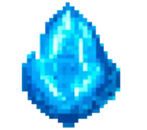
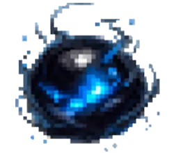
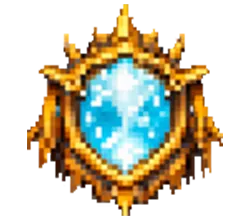
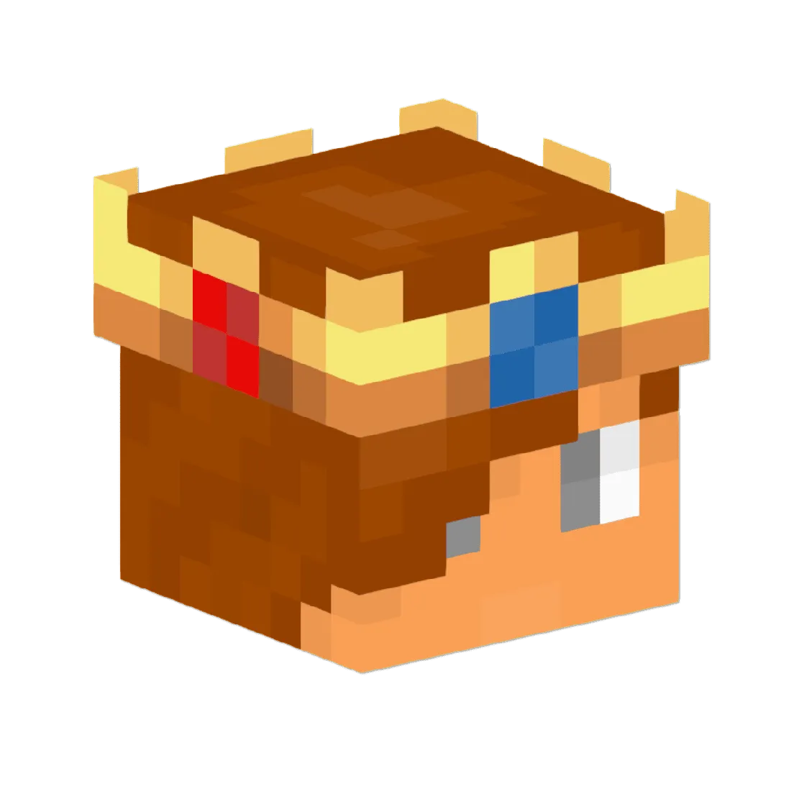
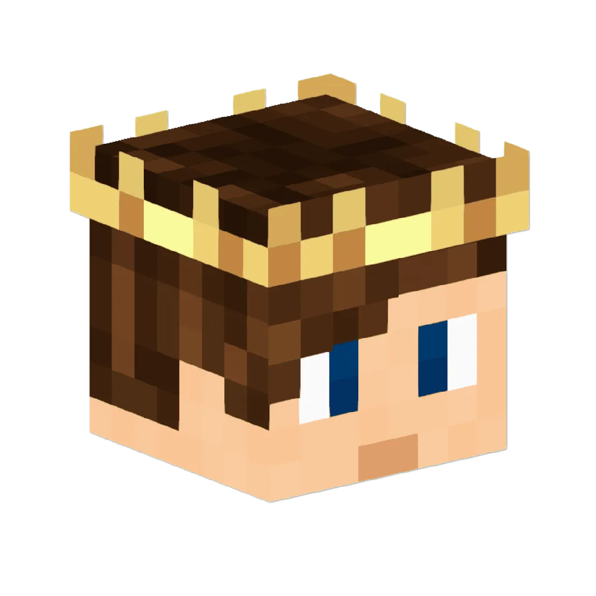
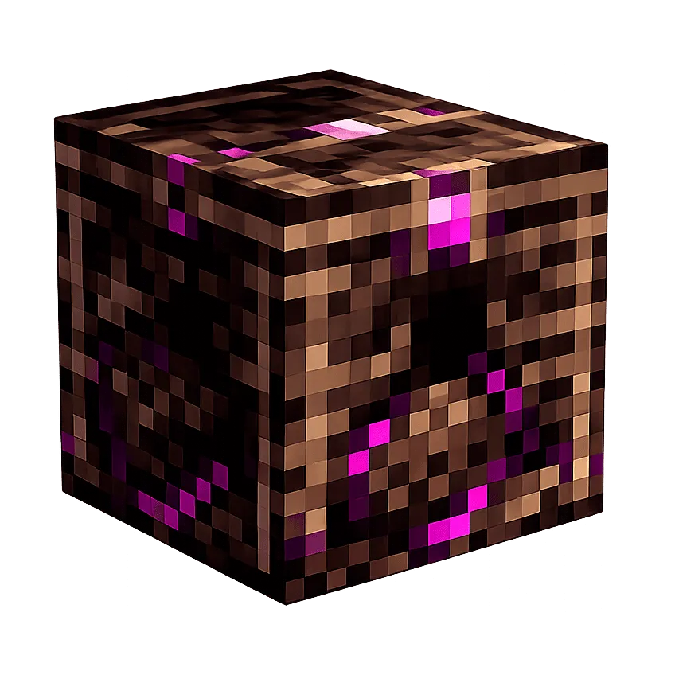
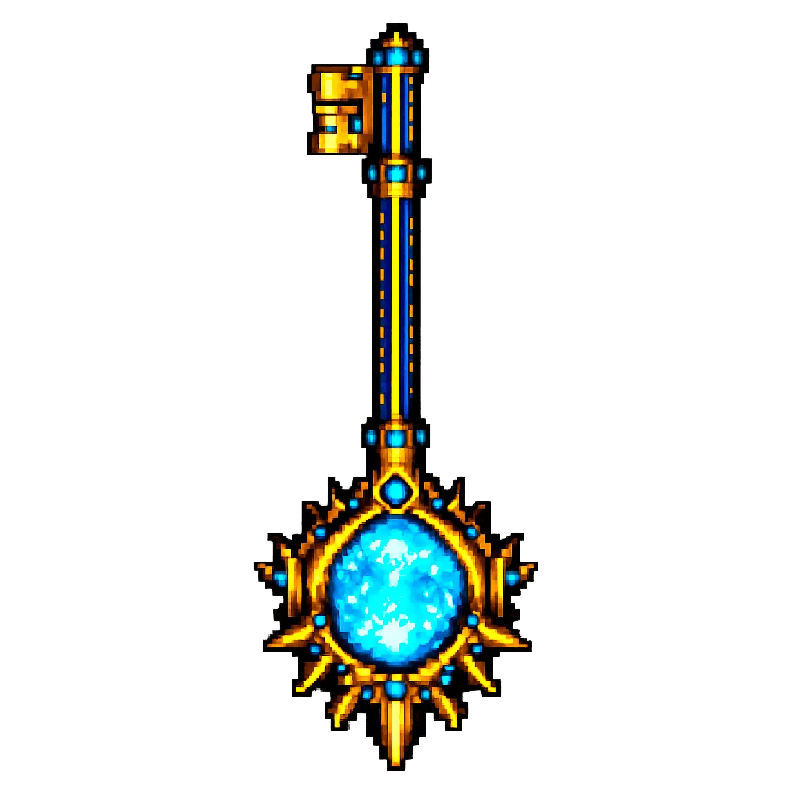
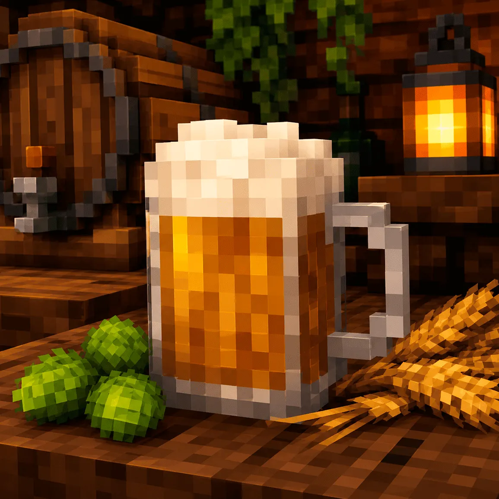

Как начать играть
- Зайди в Discord
- Отправь боту код с сервера
- Пройди интро и выбери имя
На сервере есть три вида валюты. Ими торгуют с NPC, игроками и используют для крупных покупок.

Мелкая монета для простых покупок.

Основная монета для торговли.

Крупная монета для дорогих сделок.

Меняет души между собой.

Берёт великие души на хранение.
Приват на MineReam работает через самописную систему предметов. Тотем защищает землю, а ключ даёт доступ к дверям и контейнерам.

Ставится на территории и создаёт защищённые земли владельца.

Открывает привязанную дверь или контейнер, если ключ есть у игрока.
/me описывает действие, /do - состояние вокруг, /try - спорную попытку.
/ooc нужен только для коротких сообщений вне роли. Имя меняется через администрацию.
Говори рядом с игроками, чтобы поддерживать живой RP.
Жесты помогают показывать настроение и действия персонажа.

Вари напитки с разными эффектами и используй их в выживании, торговле или RP.